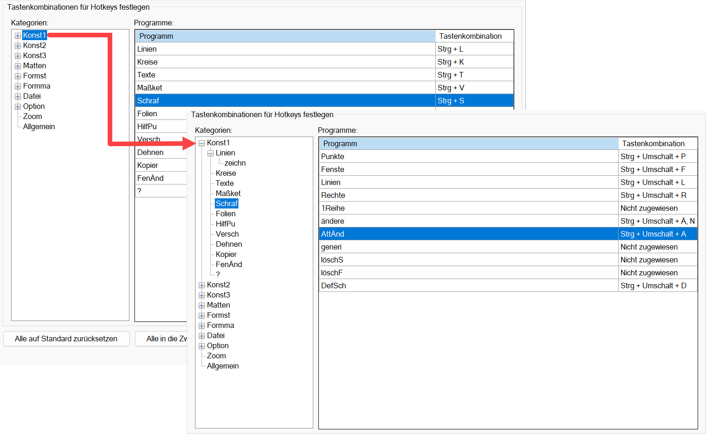
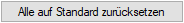
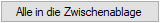
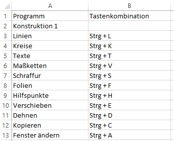
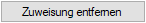

")

Konfiguration der Tastaturbelegung.
Hotkeys ermöglichen ein effizienteres Arbeiten in ISBCAD. Nutzen Sie die vordefinierten Hotkeys oder passen Sie sie auf dieser Registerkarte an Ihre Anforderungen an.
·Jedem auswählbaren Programm können Sie eine Tastenkombination zuweisen. Im linken Seitenbereich finden Sie alle Menüs in Kategorien eingeteilt. Die Kategorien können per Mausklick gewechselt werden.
·Um Zugriff auf untergeordnete Programme zu erhalten, klicken Sie auf das Plus-Zeichen oder doppelklicken Sie auf die Kategorie. Wählen Sie anschließend unter Kategorie das entsprechende Menü aus, z. B. Schraf.
 |
Anmerkung: Die Hotkey-Definition ist eine computerspezifische Einstellung, die in einer ISBCAD-Konfigurationsdatei gespeichert wird. Diese Datei wird nicht im Profil angelegt.
Tastenkombination zuweisen oder ändern
Eine Tastenkombination beginnt grundsätzlich mit der Strg-Taste. Tasten wie F2, F8 usw., Entf, Ende, Bild auf, Bild ab und die Pfeiltasten hoch/runter können einzeln zugewiesen werden. Diese lassen sich ebenfalls mit der Strg-Taste kombinieren.
§Wählen Sie im Tabellenfeld Kategorien eine Kategorie und klicken im mittleren Tabellenfeld Programme auf das Programm, dem Sie eine Tastenkombination zuweisen möchten.
§Drücken Sie die Kombination von Tasten, die Sie zuweisen möchten. Drücken Sie beispielsweise nacheinander Strg und die gewünschte Taste oder Tasten (z. B. "Strg + E" oder "Strg + S + D"). Die Tastenkombination wird zugewiesen.
KonflikteIm unteren Bereich des Dialogs wird angezeigt, ob die eingegebene Tastenkombination bereits einem anderen Befehl zugewiesen ist. Eine Meldung informiert darüber, wo die Tastenkombination aktuell verwendet wird, falls ein Konflikt besteht.
Wenn ein Konflikt besteht, probieren Sie eine andere Kombination aus oder erweitern Sie die Tastenkombination mit einer weiteren Taste wie "Strg + Alt + S", "Strg + Umschalt + S" oder "Strg + F8 + S" , um den Konflikt zu lösen. Nutzen Sie ggf. die Funktion [Zuweisung entfernen], um eine zugewiesene Tastenkombination zu entfernen. |

Setzt alle Tastenkombinationen nach Rückfrage auf den Auslieferungszustand zurück.

Alle zugewiesenen Hotkeys werden in die Windows-Zwischenablage kopiert. Sie können die Hotkeys mit der Tastenkombination Strg + V in ein Text- oder Tabellenverarbeitungsprogramm einfügen. In Tabellenverarbeitungsprogrammen entsteht eine zweispaltige Tabelle mit den Spaltenüberschriften „Programm“ und „Tastenkombination“. In Textverarbeitungsprogramm werden die Einträge durch Tabstopps getrennt und können, falls die Funktion verfügbar ist, in eine Tabelle umgewandelt werden.
 |
Beispiel: Hotkeys eingefügt in Microsoft® Excel®. |

Entfernt die Zuweisung der markierten Tastenkombination. Die Tastenkombination wird auf "Nicht zugewiesen" gesetzt.
Zugehörige Referenz: